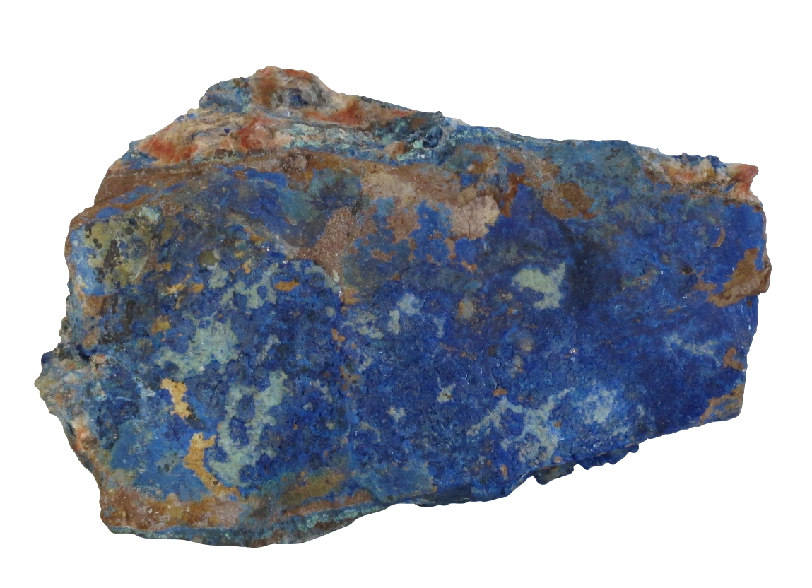

Copper reacts readily with other substances, it can be formed in a variety of ways in the Earth's crust. It is often found in deposits with other metals such as lead, zinc, gold and silver. By far the largest amounts of copper are found in the crust in bodies known as porphyry copper deposits.